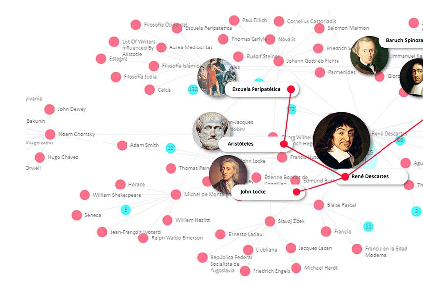

Bio
Research
Teaching
Publications
Meng-Fen Chiang
Lecturer of Computer Science at The University of Auckland
Office: Anywhere on Earth
E-mail: meng.chiang[at]auckland.ac.nz
Biography
2020 - Now: Lecturer, School of Computer Science, University of Auckland, New Zealand
2019 - 2019: Adjunct Professor, Singapore Management University (SMU), Singapore
2017 - 2020: Research Scientist, Living Analytics Research Centre, Singapore
2014 - 2020: Research Fellow, Living Analytics Research Centre, Singapore
2012 - 2014: Sr. Engineer, Yahoo, Taiwan
2006 - 2013: PhD Computer Science, National Chiao Tung University, Taiwan
2011 - 2011: Visiting Scholar, University of Illinois at Chicago, USA
2009 - 2010: Research Intern, Yahoo, Taiwan
2004 - 2006: Master. Sc., Computer Science at National Chengchi University, Taiwan
2000 - 2004: Bachelor. Sc., Computer Science at National Chengchi University, Taiwan

Research
Knowledge Representation Learning
Knowledge Graph Embedding
Knowledge Graph Reasoning
Knowledge Base Completion
Question Answering over Knowledge Graphs
Logical Query Reasoning
Natural Language Question Answering
Urban Computing
Taxi Demands Modeling
Taxi Trip Occupancy Inference
Traffic Congestion Detection
Urban Lifestyles Modeling
Teaching
COMPSCI 220: Algorithms and Data Structures (SWU), 2021
COMPSCI 753: Algorithms for Massive Data, 2021
COMPSCI 762: Advanced Machine Learning, 2021
SOFTENG 370: Operating Systems, 2020
Publiciations
Cost-Effective Knowledge Graph Reasoning for Complex Factoid Questions
[
pdf
]
Xia Yang,
Meng-Fen Chiang
, Wang-Chien Lee, Yi Chang.
IJCNN, 2021
CO2Vec: Embeddings of Co-Ordered Networks Based on Mutual Reinforcement
[
pdf
]
Meng-Fen Chiang
, Ee-Peng Lim, Wang-Chien Lee, Philips Kokoh Prasetyo.
DSAA, 2020
One-Class Order Embedding for Dependency Relation Prediction
[
pdf
]
Meng-Fen Chiang
, Ee-Peng Lim, Wang-Chien Lee, Xavier Jayaraj Siddarth Ashok, Philips Kokoh Prasetyo.
SIGIR, 2019
Inferring Trip Occupancies in the Rise of Ride-Hailing Services
[
pdf
]
Meng-Fen Chiang
, Ee-Peng Lim, Wang-Chien Lee, Tuan-Anh Hoang.
CIKM, 2018
Traffic-Cascade: Mining and Visualizing Lifecycles of Traffic Congestion Events Using Public Bus Trajectories (Demo Paper)
Agus Trisnajaya Kwee,
Meng-Fen Chiang
, Philips Kokoh Prasetyo, Ee-Peng Lim.
CIKM, 2018
Content quality filtering without use of content
[
link
]
Meng-Fen Chiang
, Wen-Chih Peng.
US Patent 9,836,539, 2017
BTCI: A new framework for identifying congestion cascades using bus trajectory data
[
pdf
]
Meng-Fen Chiang
, Ee-Peng Lim, Wang-Chien Lee, Agus Trisnajaya Kwee.
IEEE BigData 2017
Mining and clustering mobility evolution patterns from social media for urban informatics
Chien-Cheng Chen,
Meng-Fen Chiang
, Wen-Chih Peng.
KAIS, 2016
Trajectory pattern mining: Exploring semantic and time information
Chien-Cheng Chen,
Meng-Fen Chiang
.
TAAI, 2016
On Mining Lifestyles from User Trip Data
[
pdf
]
Meng-Fen Chiang
, Ee-Peng Lim, Jia-Wei Low.
ASONAM, 2015
Where are the passengers?: a grid-based gaussian mixture model for taxi bookings
[
pdf
]
Meng-Fen Chiang
, Tuan-Anh Hoang, Ee-Peng Lim.
SIGSPATIAL/GIS 2015
Inferring potential users in mobile social networks
Tsung-Hao Hsu, Chien-Cheng Chen,
Meng-Fen Chiang
, Kuo-Wei Hsu, Wen-Chih Peng.
DSAA 2014
Mining Mobility Evolution from Check-In Datasets
[
pdf
]
Meng-Fen Chiang
, Chien-Cheng Chen, Wen-Chih Peng, Philip S. Yu.
MDM 2014
Dynamic Circle Recommendation: A Probabilistic Model
Fan-Kai Chou,
Meng-Fen Chiang
, Yi-Cheng Chen, Wen-Chih Peng.
PAKDD 2014
Exploring heterogeneous information networks and random walk with restart for academic search
[
pdf
]
Meng-Fen Chiang, Jiun-Jiue Liou, Jen-Liang Wang, Wen-Chih Peng, Man-Kwan Shan.
KAIS 2013
Inferring distant-time location in low-sampling-rate trajectories (Demo Paper)
[
pdf
]
Meng-Fen Chiang
, Yung-Hsiang Lin, Wen-Chih Peng, Philip S. Yu.
KDD 2013
A Temporal Probabilistic Model for Dynamic Circle Recommendation in Mobile Applications
Fan-Kai Chou,
Meng-Fen Chiang
, Wen-Chih Peng.
MDM 2013
Distant-Time Location Prediction in Low-Sampling-Rate Trajectories
[
pdf
]
Meng-Fen Chiang
, Wen-Yuan Zhu, Wen-Chih Peng, Philip S. Yu.
MDM 2013
Exploring latent browsing graph for question answering recommendation
[
pdf
]
Meng-Fen Chiang
, Wen-Chih Peng, Philip S. Yu.
World Wide Web 2013
Inferring social relationships across social networks for viral marketing
[
pdf
]
Tsung-Hao Hsu,
Meng-Fen Chiang
, Wen-Chih Peng.
TAAI 2012
An event-based POI service from microblogs
Chun-Shuo Lin,
Meng-Fen Chiang
, Wen-Chih Peng, Chien-Cheng Chen.
APNOMS 2011
Parallelizing random walk with restart for large-scale query recommendation
[
pdf
]
Meng-Fen Chiang
, Tsung-Wei Wang, Wen-Chih Peng.
WWW (Workshop) 2013
Emotion-based music recommendation by affinity discovery from film music
Man-Kwan Shan, Fang-Fei Kuo,
Meng-Fen Chiang
, Suh-Yin Lee.
Expert Systems with Applications 2009
Relevance feedback for category search in music retrieval based on semantic concept learning
Man-Kwan Shan,
Meng-Fen Chiang
, Fang-Fei Kuo, Suh-Yin Lee.
Multimedia Tools and Applications 2008
Discovering popular co-cited communities in blogspaces
Meng-Fen Chiang
, Wen-Chih Peng, Chia-Hao Lo.
ICDE (Workshop) 2008
Ranking Web Pages from User Perspectives of Social Bookmarking Sites
Chia-Hao Lo, Wen-Chih Peng,
Meng-Fen Chiang
.
Web Intelligence 2008
Emotion-based music recommendation by association discovery from film music
Fang-Fei Kuo,
Meng-Fen Chiang
, Man-Kwan Shan, Suh-Yin Lee.
MM 2005